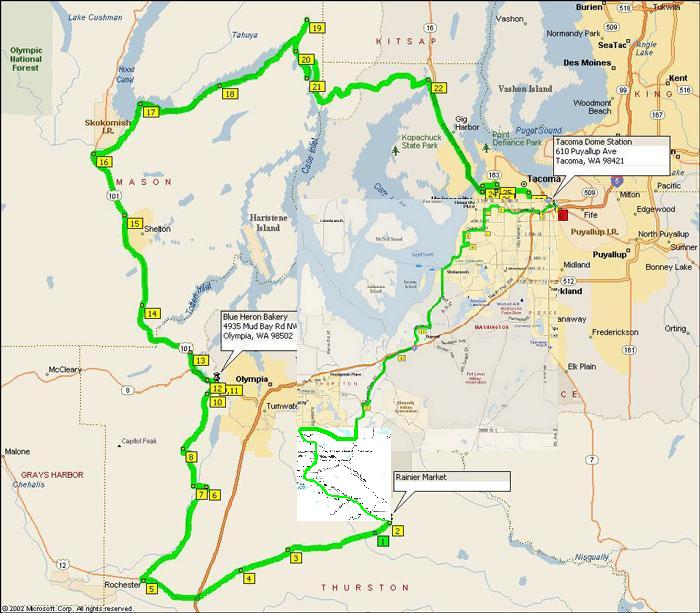
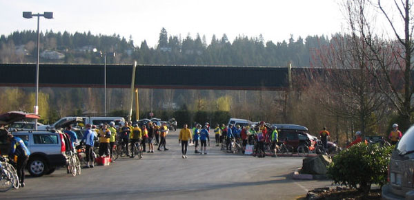
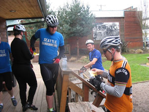
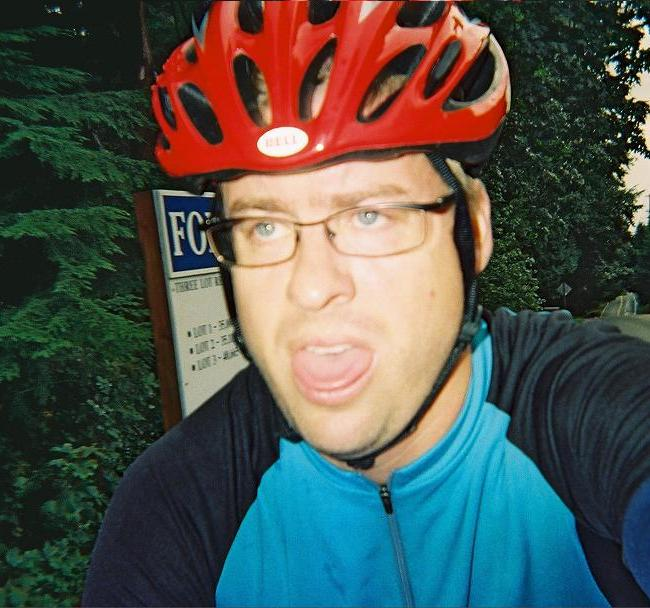
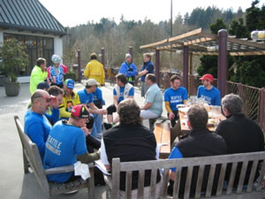
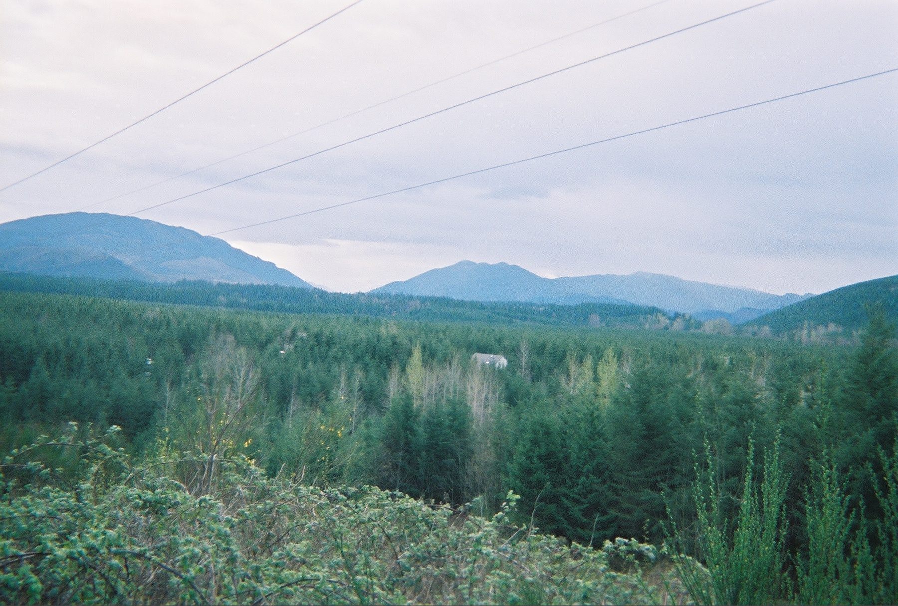
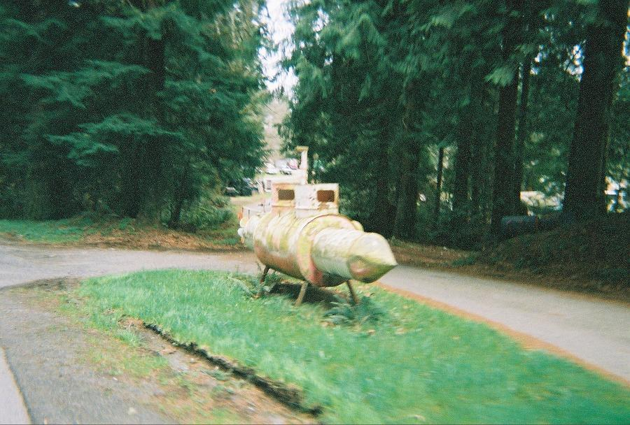
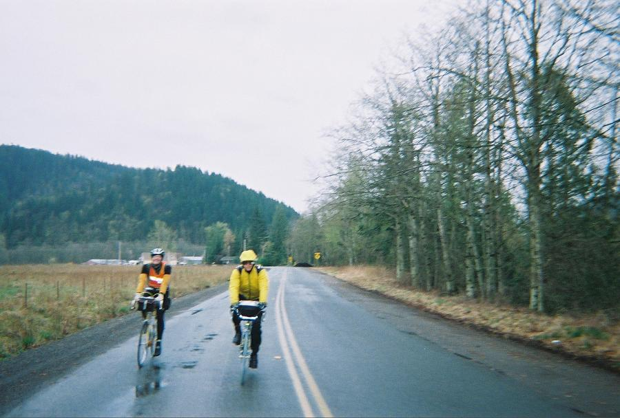

Volume 10 Issue 1 - April 2005
Ride Summaries: 100km, 200km
Rider Profile: Ron Himschoot
Ride Preview: SIR 300km
Ride Reports: Rookie 100km and A Ducky 200km
Ride Overview: SIR 200k - View from the RBA
NOTE: Please send any content for the newsletter to Patrick Gray
- SIR Spring 300km is April 9th, starting at 6am in Tacoma.
- SIR Fleche Northwest is April 22-24, destination Port Townsend.
- Volunteers are still needed for the Cascade 1200. Click here for more information.
- If you haven't sent in your 2005 membership, now is a good time to do so before too many brevets happen. SIR Application, RUSA Application
- A PDF version of this issue of SIR Rides Again is available here.
Jan Heine
Saturday, March 5th was the first SIR brevet of the year. It was a huge success, with a SIR record of 114 official finishers. It appears that most (all?) riders had a good time. Partly sunny skies made for pleasant cycling, strong winds seem to have resulted in more tail- than headwinds, and the course was as scenic and varied as ever. Thank you to Tom Lawrence for organizing and manning all the secret controls.Statistics
127 starters
114 official finishers
No incidents
Patrick Gray
A record number of riders for a non-PBP year turned out for the Spring 200km on March 19th. Everyone had an excellent chance to test their rain gear and fortitude. The post-ride chili-feed was fantastic and a big thanks go out to Mary and Greg Cox (and a couple of little blonde girls) for hosting!
Statistics
86 starters
86 official finishers
No DNFs, injuries or penalties
Patrick Gray
In 2005 SIR veteran Ron Himschoot became the first ever recipient of RUSA's Ultra Randonneur Award. Ron has a high level of humility and feels there are plenty of other riders with more miles behind them and more stories to tell. But since this is our newsletter, we’re going to run a profile on him anyway.
Ron got started in long distance riding pretty much as far back as he can remember. He recalls that it was always a matter of pushing the boundaries and finding out where he could go next around the block, to the store, to the next town He rode his first Century in the early 80s as part of his preparation for RSVP.
He joined SIR in the mid-90s during its infancy and described the group as incredibly cohesive and a pleasure to ride with. Everyone would wait for all of the other riders to finish, even if it meant sitting around for five or six hours. He said his first 200km ride was more difficult than he had imagined. After his first 300km ride he couldn't conceive of stretching the distance to 400km.
On his first attempt at a 600km ride he learned a valuable lesson in minimizing time off the bike. In Hoquiam he ordered a pizza from Dominoes then sat around waiting for it to arrive. He wasted time at other controls and after a navigation problem kept him lost in Puyallup for two hours, he missed the time cutoff at the next control.
There were other DNFs to come, including a miserable, wet, cold 400km ride near Vancouver where the appeal of a friend's warm condo lured Ron from the road. Knee pain caused him to abandon a 600km and 1200km in the same year and he still wonders if he could have finished the 1200 after being chided that everyone's knees hurt. His perspective now is that no one quits a brevet, they just fail to make the time cutoff at the next control.
During his first 1000km he decided to quit. It was raining, he was bonking and having no fun. He called a friend to pick him up in Arlington. But after eating an apple fritter and chatting with other riders while waiting for his friend, he wound up getting back on the bike and continuing, though he doesn't recall making the conscious decision to go on. Ron's toughest ride was the 2000km in Y2K put on by the BC Randonneurs. After finishing he stayed off the bike for at least a week.
For Ron the appeal of Randonneuring is the psychological aspect. "It's physically demanding, but you’ve gotta come to grips with yourself. You find out a lot about who you are, Ron says. He jokes about riding through beautiful scenery in the middle of the night and has countless stories of the necessity of improvising to get through challenging rides (socks, with the toes cut off, make excellent arm warmers).
Ron doesn't espouse any particular training regimen, he just rides whenever he can. A good year will see him riding 8000km. He also doesn't blindly embrace new technology, preferring to stick with materials and designs that have been proven over the years. When he does pick up something new, he'll try it out for awhile before using it on a long brevet. He's committed to Brooks saddles and is always looking for a good light. And he has a stable of seven bicycles, preferring his Rivendell for brevets.
Despite the tens of thousands of miles under his wheels, there are still more rides that Ron would like to tackle, including Boston-Montreal-Boston and the Great Southern Randonée or Perth-Albany-Perth in Australia. He says he's a sucker for new roads, saying, "It's nice to ride places you’ve never ridden before.
Organizers: Peter Beeson and Duane Wright
 This spring's 300km ride takes an all new route, inspired by pieces of RAPSody, the 2004 NWTR, the SIR fall 200km and the traditional Hood Canal 300km route. The ride begins near the Tacoma Dome, heads south toward, but around, Olympia, passes near Rainier (the town) then west to Rochester. From there it's back north through Shelton and then northeast along the southern end of Hood Canal before heading back to Tacoma via Gig Harbor and the Tacoma Narrows bridge.
March 5, 2005
Patrick Gray
The first randonneuring event of the year and of course my fitness level was way off from where I'd been last September. After packing on at least 10 pounds during the winter, I'd finally climbed back on my bike in early January, realizing that the time for training was getting shorter and shorter and if I wanted to survive a couple of brevets I'd better get serious. My goal is to work up to a 600km ride and I don't want to make a fool of myself.
In the off season I'd put a pair of fenders on my bike, invested in leg warmers and had experimented with various cold weather / wet weather clothing options. I'd also upgraded my saddle bag from something in the ‘bullet’ category to something with enough room to carry more than tools and a credit card. So gear-wise I was feeling pretty well prepared. Because I'm a very bad person I still hadn't taken the bike in for a tune-up, so the pulleys barely have any teeth on them, the tires are ancient and the shifting is a little out of tune. However, I did take the time to do a thorough cleaning of the drive chain, including removing the chain for a nice bath. When I'd put everything back together I noticed there was a little chattering noise coming from the derailleur, but hell, I only had three days until the brevet, not nearly enough time to investigate.
My friend, Tim Corkery, and I were both planning to do the Populaire. Since he lives only a few miles away, we decided to carpool, knowing that real men were riding out to Woodinville for the start. But we’re not real men and we know it. So off we headed at eight in the morning to get to the 9:00 start.
As with the Mountain 100 in the Fall, we were lucky enough to have a steep hill within the first mile and I remembered, too late, that I'd made a note to do a warm up ride if a hill could be expected early on. But it was a short hill, so I stood and charged quickly up it. Tim caught up at the top and off we went. On the next hill Tim dropped further and further back. At the top I slowed down to let him catch up, but after half a mile there was no sign of him and with a descent coming up I said a silent adieu and headed down.
 Start of the Populaire
Photo: Donald BoothbyThe route was rolling hills until Carnation where we had the second control. I'd been in a group with one or two tandems and several SIR veterans before Carnation and didn't want to get left behind. So I was in and out of Sandy's Espresso quickly to get my card signed and then back in the saddle. Everything was working well and my lungs and legs felt good. The Canadian tandem was up the road a little bit and they took an unexpected left turn. Another rider near me said it wasn't the way to go, so I trusted him (and my cue sheet) and stayed the course.
 Mark Thomas expedites card signing at Sandy's Espresso
Photo: Donald BoothbyI rode near several riders for much of the next twenty miles, leapfrogging on the hills depending on our strengths. I pushed the speed on the flats up to 20 miles, which was probably a very bad thing, as I'd find out soon enough. After another couple of hills we hooked up onto State Route 203. Mike Richeson, who I rode with during the Mountain 100, caught up with me and we cruised along, chatting for awhile. A fast paceline developed and eased by us, so we dropped in line and were cruising towards Monroe at 19-20 mph.
After several miles I decided (well, my legs decided) the pace was too fast and so I dropped out of line. I made it to the Lewis Street Park at my own pace, arriving while those from the paceline were still there. I filled in the time and the mystery question on the brevet card, took a quick bathroom break and hopped back on the bike. Mike had been too slow leaving the checkpoint and missed the paceline, so he and I got to ride along together for a few more miles through flat farmland. He commented that on a longer ride, in the dark, this particular road had seemed interminable, even though it lasted only a mile or so. Soon enough another paceline came along and Mike hopped on. I told him my legs weren't up for it and I rolled along at my own pace again heading toward the ominously-named High Bridge.
After the bridge my legs made it known that they were no longer having fun. I assured them that we only had another 15 miles to go, but they didn't seem encouraged. Various riders eased by as my pace became slower and slower. Although my legs were running out of gas, my emergency supply of obscenities was holding out nicely and I was able to give Fales (fails?) Road a cheery greeting. Ahead I saw that another SIR rider had missed the turn onto Fales. I whistled a couple of times but he didn't hear me and continued on his way. I decided he'd figure out his mistake soon enough and knew that I wouldn't be able to catch him to steer him the right way anyway, so on I peddled.
The rest of the ride was a haze of suffering and despair. After crossing State Route 522 I was delighted to see a quickie mart and I swung in for a reload of Gatorade and a candy bar (having run out of fluids and Clif bars miles before). Slightly rejuvenated I set off again, but stopped a few miles on to massage my wildly-cramping legs. If my legs were doing anything other than pedaling they cramped up. If I tried to stretch them they cramped. Walk, cramp. Stand, cramp. It was fun. So I stopped to massage them and a guy rode by asking if I was okay. I told him all I needed was a spare pair of legs and I'd be fine. I hopped back on and soon reached the outskirts of Woodinville.
 "The Mask of Pain"
Photo: Patrick GrayI had a hard time figuring out if I was on the right track, but I knew I was at least in the right vicinity and soon the road signs matched the cue sheet and I knew the finish wasn't far off. I hooked up with the Sammamish River Trail, but inexplicably went North instead of South. I figured out my mistake after only a minute and turned back around, knowing the brewery wasn't too far off. Within five minutes I caught sight of it, exited the trail and rolled into the parking lot. I turned in my brevet card and wheeled over to the car. I was surprised to find it had only been four and a half hours since the ride started.
I decided to take a look at that noisy rear derailleur. It took only seconds to determine that I'd put the chain on incorrectly and instead of going smoothly around both pulleys, part of it was rubbing across a plastic guide outside the top pulley. In other words, I'd been dragging the chain across a chunk of plastic for the entire ride. This might have slowed me down a little bit, but mostly it was another embarrassing lesson that I shouldn't ignore obvious problems. After breaking the chain and putting it back on correctly I wandered over to the brewery to track down Peter Beeson. I'd asked about him at a couple of the checkpoints and knew he'd finished ahead of me. He wasn't hard to spot in a group of SIR riders, so I said, "hello" and we caught up on old times for awhile. I talked with Dave and Mike again, and perhaps some others, though my memory is a little fuzzy. Tim finished the ride in six hours and we packed up and headed home, happy but tired.
 Riders socializing at the brewery
Photo: Donald Boothby
March 19, 2005
Donald Boothby
OK, I'll admit it. I'm a whiner. I'm a fair weather rider. When it rains, I look at the sky and my bike and think to myself, "I don't have to do this, there will be better days for riding. Today is a fine day to sit by the fire, drink coffee, read the morning paper and maybe get caught up on some of those nasty household chores...well, alright, if you insist, I guess I'll go out for a SHORT ride.
For the past several weeks, we have had a marvelous spring here in the great northwest with lots of clear skies, some days in February and March warm enough for many of us to get out of our full scale winter protective gear and ride like it was mid-spring. Of course, that is all subject to change without notice around these parts and all week the weather pattern had been slowly changing, with increasing predictions for rain coming in Saturday and Sunday. Time to break out the raingear and make sure everything is ready for inclement weather.
I showed up for the Spring 200K brevet somewhat ignoring these warnings. I took them seriously, but only to a point. I had my checklist printed out and made certain all the items necessary were packed safely away on the bike and I was ready to roll. As I started out of the house, Mimi asked me if I had my cell phone. Yes. Did I have my wallet? Yes. Then I hurriedly stuffed my checklist into her hands and rushed out the door, not wanting to miss the 7:00 start and knowing that it was a 20 minute drive and I was leaving over an hour early. So where were my booties and skullcap? At home, where they belong on a day when I'm not expecting rain and anticipating temperatures in the mid 50's. Oh, yeah. That was LAST weekend.
 Rain in the hills
Photo: Patrick GrayI got to the start line and I could see the clouds off to the south, looking especially threatening around the area where Enumclaw should be. Not good. "It's going to be miserable, I said. "No it isn't, it's going to be GREAT, Matt said. I knew that before the end of the day my feet were going to be wet, cold, numb and my attitude would be worse. I thought maybe I shouldn't even start, but then decided I'd at least ride to the first control and if it got really bad, I could ride back home. With an 18 mph average into Black Diamond and no rain, it was one of those so far, so good moments. I knew what was ahead and was convinced that before the day was over I was going to DNF this ride, and that I was going to have to pick my time just right so as not to embarrass myself too badly.
As I was leaving the Bakery, Shane Balkovetz rolled in, looking like he was in great pain. I asked him how he was doing and he said, "I’ve got NOTHING. I thought he was probably going to call Chantel and maybe have her come pick him up. I forged on toward Hobart, thinking that I could probably make it to Enumclaw without giving up and I'd decide there if I wanted to continue. After all, Charlie's has pretty good food and I could sit there and drink coffee while I waited for Mimi to come get me.
I watched my computer crank over to 20 miles into the ride and was thinking that either Jan Heine was riding a lot slower this year or I was doing a lot better. Last year on my first brevet I became discouraged when, at exactly 20 miles, he passed me going the other direction and I was 5 miles from the Hobart Grocery. That meant that in 20 miles he was 10 miles ahead of me. How could that be? He didn't pass me until I hit 20.4 miles this year. Now I felt much better.
Between Hobart and Enumclaw the headwinds picked up, the dark gray clouds over the hills to the south were now black and I started to become even more convinced that I was not going to complete this brevet. At one point I was on my bottom chain ring, riding at 9 mph into a fierce wind and the rain drops were starting to come; a few at first, but I knew it was only going to get worse. A lot of riders had started to pass me and I managed to suck in behind 2 faster riders who got me into Enumclaw and we started up the mountain with rain pelting us. I saw Charlie's and thought of stopping. After all, if it is raining here, just think of what it will be like by the time I get to Greenwater. It's probably snowing there and I am not dressed at all for riding in the snow. But the winds had died down and it was not a heavy rain so I decided I could start up the mountain and if it got too bad, I could stop, call Mimi and then turn around and coast back to Charlie's, and I wouldn't have to wait as long for her to get there.
 The Yellow Submarine, near Hobart
Photo: Patrick GrayI was starting to have cramps in my arches, especially in my right foot and so made some great excuses to stop. I have plantar fasciitis in my right foot and I really don't want to do anything that would make it worse. That's the biggest reason I cycle instead of hike and what would it be like if I couldn't do this? My brain was now working overtime and then I caught up (briefly) to Tony Licuanan on his beautiful recumbent. I told him I was thinking of stopping and he encouraged me to go on. His idea of encouragement was that I could rest on my bike from Greenwater to Orting, because it was an easy section. I was somewhat encouraged when at 51.8 miles into the ride, I saw the first of the riders heading back down the mountain. A bit confusing, because there were these two young racer looking dudes and Jan was behind them. Last year, I never saw the first group on this stretch.
The rain stopped about halfway up the mountain and I had almost 9 miles of rain-free riding. My feet were starting to dry out a bit, and other than being cold it wasn't too bad yet so I decided I would save any decisions until I got back down to Mud Mountain Dam Road. Of course, on the descent, the rain started to pick up again with a vengeance and I was riding along with a younger rider, Patrick Gray, a rookie who was thrilled about being out here. I wasn't thrilled. About that time I saw Shane who was still struggling up the mountain. He still looked like he was in pain, but he forced a smile and told me he was doing okay. I decided I'd stay the course and when we got off the mountain, I could always get back into Enumclaw. After all, if he can do it to this point, I can make it a few more miles.
I was about a tenth of a mile behind Jim and Ann on their tandem with Matt in pursuit of them when we got off the mountain and were supposed to turn left, staying on Mud Mountain Dam Road which would take us straight to Hwy. 410. They continued on toward the fairgrounds and I thought this was the wrong way, but since they had a route sheet and mine was in my pack, I figured I'd just go along. After all, I can still get there and not only that, but Charlie's was just ahead of me. Hmmmm. Maybe it is fate. I'd have over 75 miles in at that point, and that's a respectable 5 hour workout. It was raining hard at that point and I had every intention of stopping once I got to downtown Enumclaw.
 Len Lescosky (L) and another rider on Mud Mountain Dam Road
Photo: Patrick GrayI could see them turn left at Hwy 410 and like a faithful duckling, I followed, all the time falling farther behind. It didn't really matter, though, because I was done. Wet, cold, tired and sore, I'd had enough and just wanted to go home and take a hot bath. At the intersection where the road splits toward Issaquah or Sumner, I stopped. There is a mini-mart there and I pulled to the curb and reached for my cell phone with every intention of calling Mimi and asking her to come get me. There was nobody behind me and I couldn't see anybody in front anymore, either.
Odd things happen at strange times. As I unzipped my pack, I remembered a picture I saw when I was looking at some historical bicycling magazine or website. This photograph was of a cyclist dressed in street clothes and what appeared to be wingtips. I got to thinking of the pioneers of our sport and the conditions under which they rode. Somehow, this mental image caused me to put my phone away and continue on in the now driving rain. My feet were numb, so the cramps may have been there, but maybe they'd stopped. Didn't know and didn't care. I rationalized that it would be just as easy for Mimi to drive to Orting as it would for her to drive to Enumclaw and then I'd have my century ride in for the month and wouldn't feel like I'd totally failed to meet my goals.
Last year on this ride, I saw Jan and a couple other riders as I was coming through Buckley. They were, of course headed north as I was headed south. This year, I started to look for them, but didn't see them until I got south of South Prairie. I was obviously making better time this year, despite the rain. It didn't matter, though, because I was going to stop in Orting and nothing would prevent me from doing that. The only pleasure I was getting from the ride at that point was the occasional lifting of one of my hands from the bars to make a fist and squeeze the excess water out of my now saturated gloves, watching the brackish gunk stream out behind me. My fingers were starting to get numb, but even that didn't matter. I'd be warm soon enough. I started to look for a place to pull off and call home, when I saw another rider a little behind me.
Four miles north of Orting, Peter Rankin and several other riders passed me headed north. I thought this wasn't too bad. They were only 8 miles ahead of me. Maybe if I didn't stop at all at Orting, but just got my card signed and jumped back on my bike, I could catch up to them. Total dementia had now set in, obviously.
I rolled in to Orting and there were Ralph and Carol Nussbaum who wondered how they'd gotten in front of me, Amy Pieper who was covered in mud and looked like a mountain biker and Jim and Ann on their tandem, with Matt still hanging on to their tail. Tony was there, too, with some once again encouraging support. I watched as these people left and were replaced by others who came and went and yet others that were coming in. I still hadn't called home. I knew then that I had to finish the ride. If I was going to DNF, it would be because I crashed. I started to think of how I could make that happen.
The author at the finish
Photo: UnsureI got a few miles north of Orting, and there was Shane, still slogging along in the rain, hanging on to the back of a couple of other cyclists like a lobster caught in a trap. A forced smile let me know he was determined to finish this thing and that grim determination gave me strength as I started the climb out of South Prairie back to Buckley.
I caught up to Ralph and Carol on the climb and tried to hang on to their wheel, despite the chiding I received for not having a mud flap, for the rest of the ride. We managed to catch Amy and a couple other riders at the Boise Creek control and after a stop just long enough to get our cards signed, were off for the last stretch. We had just that one big grade ahead and I knew that I could do it. My knees were telling me it was time to quit, my back hurt and I couldn't see, but if I just didn't fall and kill myself on that big descent into Green Valley, I thought I could finish.
After one more wrong turn that added an extra climb at the tail end of the ride, I pulled into the driveway at Greg's house, with a strong sense of accomplishment. It is one thing to complete a century ride on a nice day, with all the conditions going favorably. It is yet another to face the difficult conditions that the elements put in front of us and emerge victorious.
I am convinced that our brains are often our worst enemy. The human body is capable of phenomenal things, if we can just turn off the built-in limitations our brains put on us. I think this a large part of what make our sport what it is. My non-cycling friends often ask me why I would consider sitting on my bicycle for 10 hours in the rain and I just smile and say, "Well, it only rained for about 5 of them.

Mark Thomas
It was a spectacular day for the SIR 200k ride from Greg's house in Kent. Not a cloud in the sky and a clear view of Rainier looking down on the randonneurs about to start. A perfect beginning to SIR's 2005 ACP brevet schedule. Alas, only a few riders would experience this cycling perfection, because it was the organizer's pre-ride that brought such weather.
The real ride was a different story - gusting winds, nasty rain, and chilly temperatures. A more typical SIR brevet experience, for sure. But the main ride was outstanding in its own way. Over 80 randonneurs and randonneuses started out - a record turnout for a non-PBP year. Better yet, every single one finished despite the less than ideal conditions. No serious mishaps marred the ride - even Dr. K stayed on course the whole way. Most finishers were in great spirits, especially after enjoying Mary's wonderful hospitality. (Someone enjoyed it a bit too much, I think, and drove off without their front wheel - contact Greg to rescue).
In the morning had the pleasure of watching the riders come through the secret control in Cumberland. Although the winds were picking up, the riders were cheerful. Some were already showing the rando spirit of working through problems on the bike. One rider who didn’t feel well at all found food in the store across the way and persevered. One bike with a broken front derailleur was "fixed" by tossing the offending part in the trash and taping the loose cable to the frame.
Later I saw most of the riders finish at Greg's house. (Riders arrived over the course of nearly six hours - I missed the very end). It was terrific to see the mix of new and old faces - PBP veterans and first-timers. The growth in our club since I did my first brevet in 1998 has been exciting to watch and to be a part of. Last year we led the country in RUSA points - a distance-weighted measure of event participants - and were the fourth largest club in the world in ACP points - a similar measure of ACP brevets only. We have great volunteers that come out to organize and support our events and to help the club in many ways. New riders can always count on the veterans for advice and encouragement, just as it was when I was new to the club.
We are looking forward to a spectacular 2005 randonneuring season. Great turnouts for the 100km and 200km rides bode well for the year. Articles in the Seattle Times and the Bicycle Paper testify to the sport's growth here in the Northwest. We are looking forward to the Cascade 1200 - our first-ever Randonneurs Mondiaux 1200km event - and have been delighted at the rider response to the event.
See you on the roads.
| Date | Distance | Organizer | Route |
|---|---|---|---|
| April 9 | 300 km | PETER BEESON & DUANE WRIGHT | Influenced by RAPSody, the 2004 NWTR, 2004 SIR 200k (fall series), and the traditional Hood Canal 300k |
| April 22-24 | Flèche Northwest | WAYNE METHNER | New destination for 2005: Port Townsend, WA |
| May 7-8 | 400 km | DAVID HUELSBECK | A backwards preview of some of the less familiar sections of the Cascade 1000/1200 route. Subject to change! |
| June 4-5 | 600 km | OWEN RICHARDS | A new route from downtown Seattle south to Centralia and Elma. North to Shelton, Hood Canal/Tahuya Hills, then east to the Bainbridge Ferry terminal for the ferry ride back to downtown Seattle. |
Paul Johnson, Peg Winczewski, Peter McKay, Amy Pieper, Mark Thomas, Terry Zmrhal, Jon Muellner, Greg Cox, Wayne Methner
Membership Fee:
$10 - full membership w/e-mail newsletter or
$15 - full membership w/printed newsletter.
Membership Address:
c/o Terry Zmrhal
9531 112th Ave NE
Kirkland, WA 98033
425-828-7818